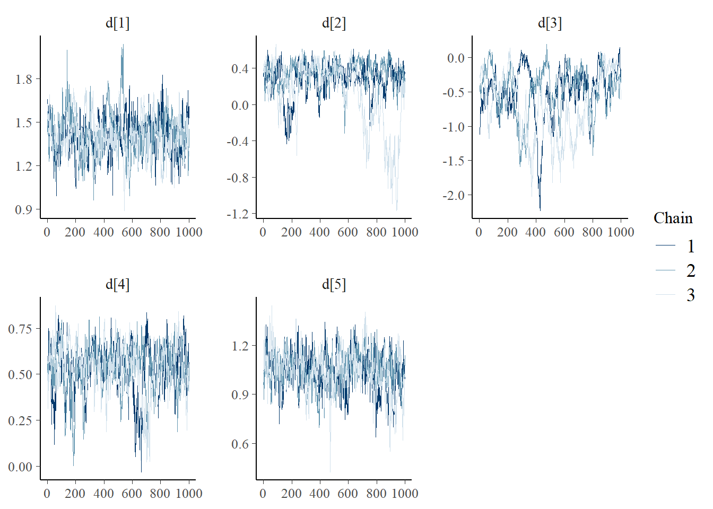
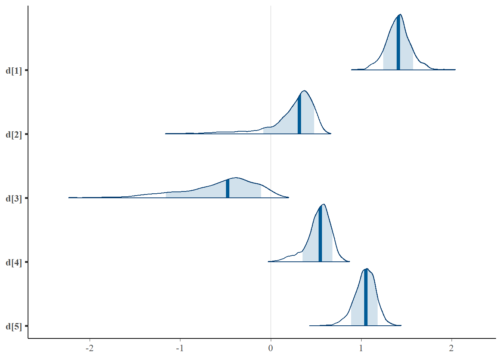
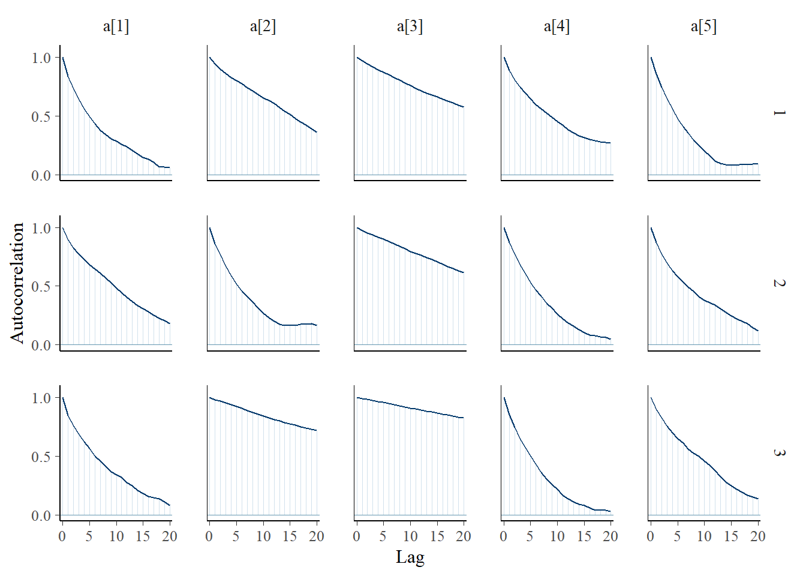
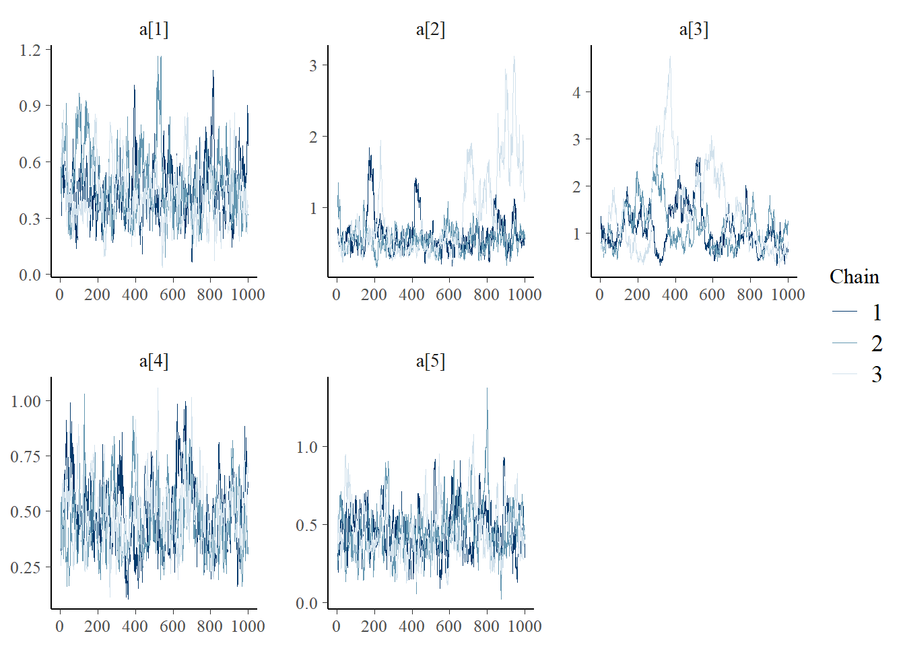
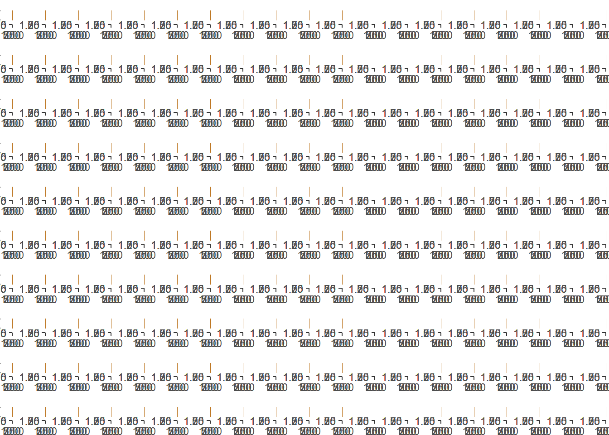
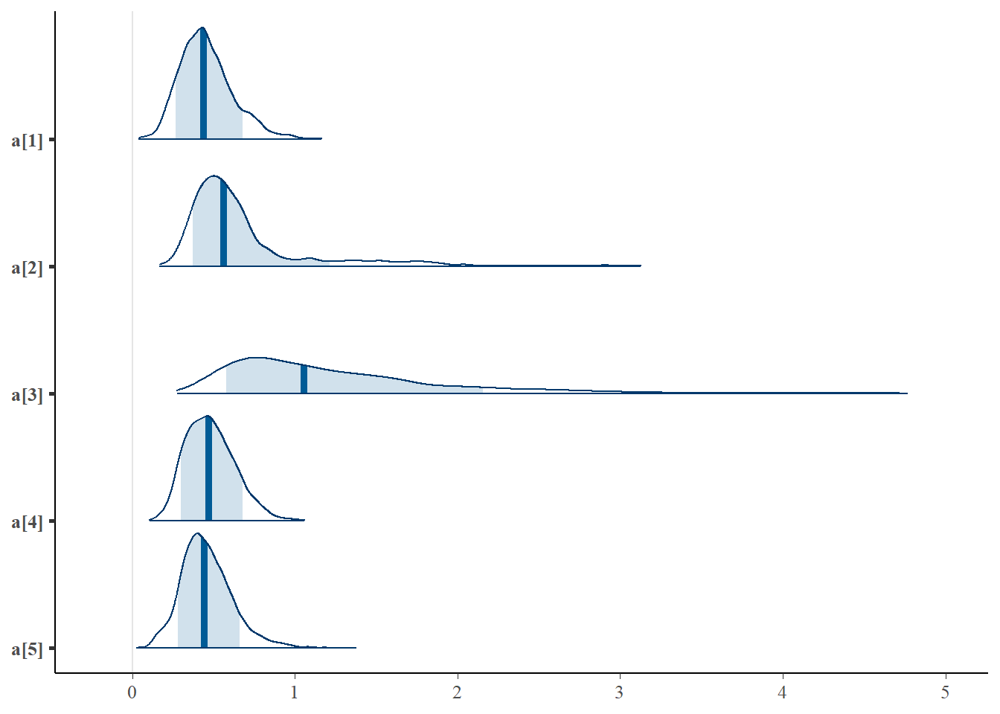
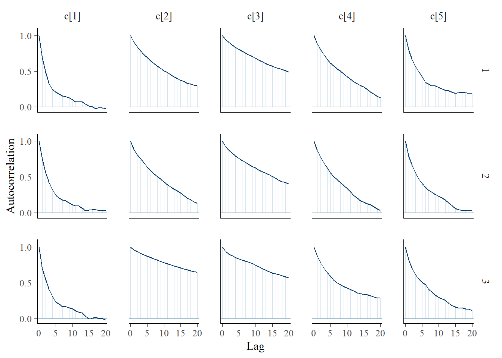
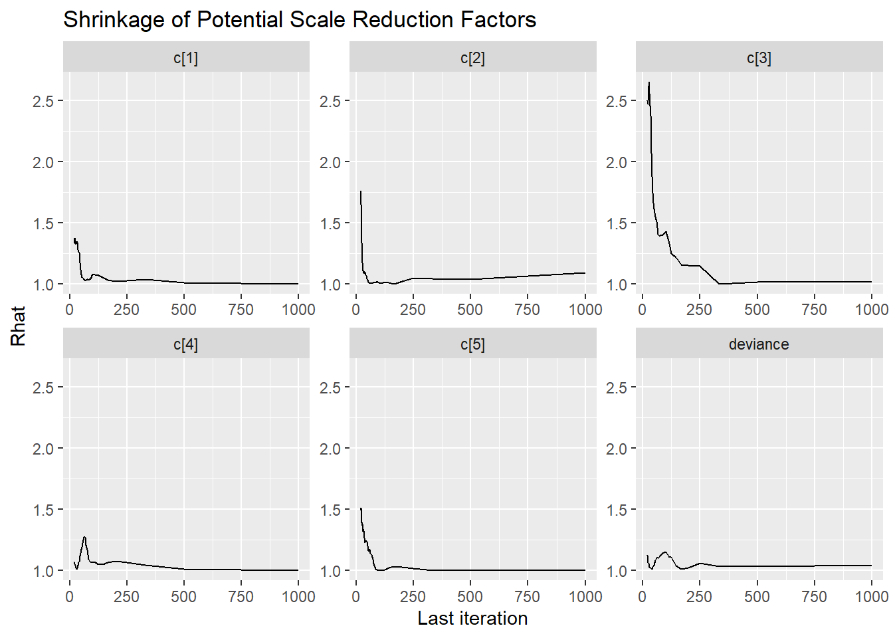
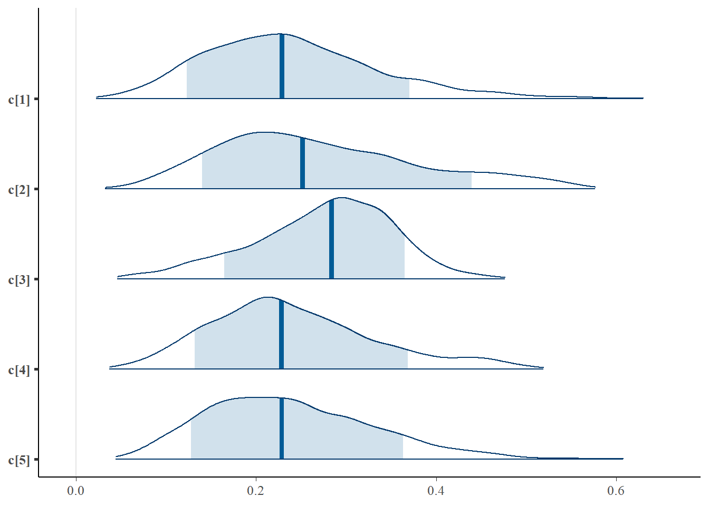
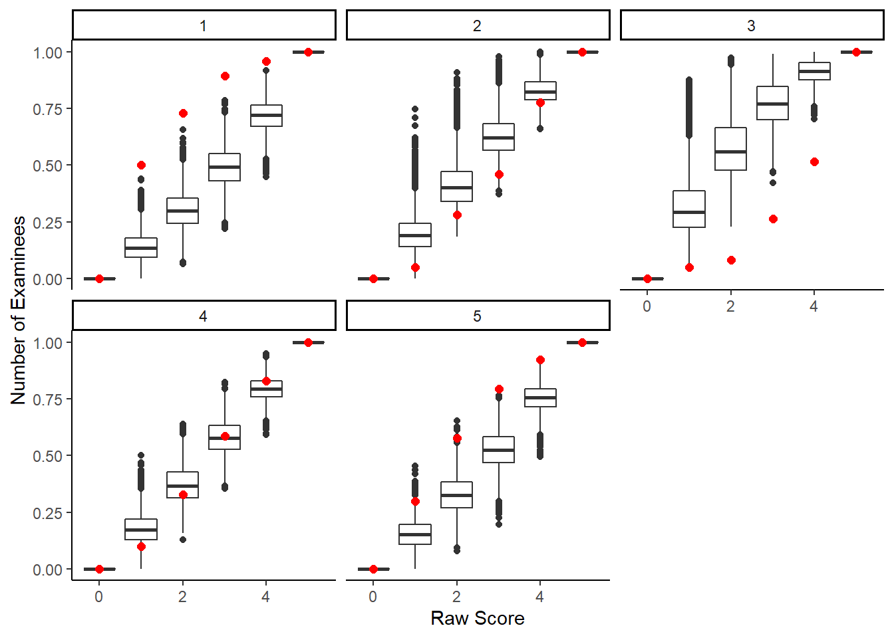

11.3 LSAT Example - JAGS
jags.model.lsat <- function(){
#########################################
# Specify the item response measurement model for the observables
#########################################
for (i in 1:n){
for(j in 1:J){
P[i,j] <- c[j]+(1-c[j])*phi(a[j]*theta[i]+d[j]) # 3P-NO expression
x[i,j] ~ dbern(P[i,j]) # distribution for each observable
}
}
##########################################
# Specify the (prior) distribution for the latent variables
##########################################
for (i in 1:n){
theta[i] ~ dnorm(0, 1) # distribution for the latent variables
}
##########################################
# Specify the prior distribution for the measurement model parameters
##########################################
for(j in 1:J){
d[j] ~ dnorm(0, .5) # Locations for observables
a[j] ~ dnorm(1, .5); I(0,) # Discriminations for observables
c[j] ~ dbeta(5,17) # Lower asymptotes for observables
}
} # closes the model
# initial values
start_values <- list(
list("d"=c(1.00, 1.00, 1.00, 1.00, 1.00),
"a"=c(1.00, 1.00, 1.00, 1.00, 1.00),
"c"=c(0.20, 0.20, 0.20, 0.20, 0.20)),
list("d"=c(-3.00, -3.00, -3.00, -3.00, -3.00),
"a"=c(3.00, 3.00, 3.00, 3.00, 3.00),
"c"=c(0.50, 0.50, 0.50, 0.50, 0.50)),
list("d"=c(3.00, 3.00, 3.00, 3.00, 3.00),
"a"=c(0.1, 0.1, 0.1, 0.1, 0.1),
"c"=c(0.05, 0.05, 0.05, 0.05, 0.05))
)
# vector of all parameters to save
param_save <- c("a", "c", "d", "theta")
# dataset
dat <- read.table("data/LSAT.dat", header=T)
mydata <- list(
n = nrow(dat), J = ncol(dat),
x = as.matrix(dat)
)
# fit model
fit <- jags(
model.file=jags.model.lsat,
data=mydata,
inits=start_values,
parameters.to.save = param_save,
n.iter=26000,
n.burnin = 6000,
n.chains = 3,
progress.bar = "none")## module glm loaded## Compiling model graph
## Resolving undeclared variables
## Allocating nodes
## Graph information:
## Observed stochastic nodes: 5000
## Unobserved stochastic nodes: 1015
## Total graph size: 31027
##
## Initializing modelprint(fit)## Inference for Bugs model at "C:/Users/noahp/AppData/Local/Temp/RtmpW4ITDP/modelcd040fb7a9e.txt", fit using jags,
## 3 chains, each with 26000 iterations (first 6000 discarded), n.thin = 20
## n.sims = 3000 iterations saved
## mu.vect sd.vect 2.5% 25% 50% 75% 97.5% Rhat n.eff
## a[1] 0.476 0.188 0.181 0.347 0.455 0.573 0.922 1.001 3000
## a[2] 0.595 0.295 0.283 0.435 0.541 0.672 1.275 1.016 190
## a[3] 1.253 0.734 0.427 0.706 1.025 1.625 3.146 1.006 370
## a[4] 0.502 0.207 0.229 0.375 0.469 0.578 0.971 1.001 3000
## a[5] 0.417 0.152 0.166 0.313 0.403 0.503 0.760 1.002 2200
## c[1] 0.242 0.094 0.090 0.172 0.232 0.303 0.443 1.001 3000
## c[2] 0.256 0.099 0.092 0.182 0.248 0.320 0.479 1.005 450
## c[3] 0.262 0.082 0.099 0.201 0.268 0.322 0.406 1.003 770
## c[4] 0.251 0.098 0.093 0.179 0.240 0.313 0.466 1.001 3000
## c[5] 0.241 0.091 0.088 0.175 0.235 0.301 0.436 1.002 1800
## d[1] 1.419 0.147 1.167 1.324 1.410 1.497 1.741 1.004 1500
## d[2] 0.285 0.221 -0.214 0.202 0.330 0.420 0.552 1.045 250
## d[3] -0.544 0.464 -1.698 -0.776 -0.429 -0.195 0.029 1.006 400
## d[4] 0.515 0.157 0.147 0.438 0.537 0.619 0.746 1.001 2500
## d[5] 1.024 0.115 0.784 0.954 1.032 1.104 1.234 1.003 780
## theta[1] -1.608 0.775 -3.190 -2.101 -1.604 -1.073 -0.145 1.002 1600
## theta[2] -1.623 0.778 -3.167 -2.166 -1.600 -1.054 -0.177 1.001 3000
## theta[3] -1.625 0.768 -3.156 -2.156 -1.614 -1.083 -0.202 1.001 2100
## theta[4] -1.307 0.773 -2.879 -1.810 -1.303 -0.774 0.180 1.001 3000
## theta[5] -1.294 0.768 -2.832 -1.807 -1.297 -0.749 0.152 1.001 2300
## theta[6] -1.303 0.766 -2.816 -1.811 -1.288 -0.772 0.163 1.003 830
## theta[7] -1.287 0.767 -2.777 -1.796 -1.274 -0.770 0.197 1.002 1100
## theta[8] -1.296 0.768 -2.877 -1.810 -1.264 -0.771 0.150 1.001 3000
## theta[9] -1.315 0.768 -2.846 -1.815 -1.296 -0.791 0.155 1.001 3000
## theta[10] -1.323 0.776 -2.911 -1.831 -1.307 -0.799 0.163 1.002 1200
## theta[11] -1.295 0.769 -2.879 -1.805 -1.261 -0.762 0.128 1.001 3000
## theta[12] -0.933 0.790 -2.530 -1.458 -0.922 -0.389 0.543 1.001 2300
## theta[13] -0.948 0.766 -2.474 -1.458 -0.943 -0.433 0.545 1.001 3000
## theta[14] -0.933 0.767 -2.442 -1.452 -0.910 -0.401 0.503 1.001 3000
## theta[15] -0.962 0.764 -2.542 -1.478 -0.933 -0.409 0.457 1.003 900
## theta[16] -0.940 0.774 -2.513 -1.446 -0.902 -0.398 0.497 1.001 3000
## theta[17] -0.966 0.757 -2.436 -1.498 -0.968 -0.426 0.483 1.001 3000
## theta[18] -0.935 0.778 -2.495 -1.448 -0.893 -0.396 0.505 1.001 3000
## theta[19] -0.958 0.793 -2.540 -1.488 -0.932 -0.426 0.554 1.001 2500
## theta[20] -0.965 0.761 -2.454 -1.462 -0.952 -0.455 0.503 1.001 2400
## theta[21] -0.935 0.792 -2.566 -1.432 -0.900 -0.406 0.557 1.001 3000
## theta[22] -0.960 0.775 -2.500 -1.489 -0.938 -0.408 0.470 1.003 910
## theta[23] -1.448 0.826 -3.045 -1.990 -1.439 -0.883 0.179 1.001 3000
## theta[24] -1.002 0.862 -2.666 -1.606 -1.002 -0.401 0.592 1.001 3000
## theta[25] -0.991 0.877 -2.728 -1.579 -0.978 -0.425 0.715 1.001 3000
## theta[26] -1.032 0.868 -2.675 -1.616 -1.042 -0.458 0.653 1.001 3000
## theta[27] -1.007 0.867 -2.682 -1.598 -1.025 -0.403 0.702 1.001 3000
## theta[28] -0.539 0.879 -2.253 -1.123 -0.550 0.037 1.152 1.002 1100
## theta[29] -0.548 0.871 -2.265 -1.142 -0.532 0.059 1.085 1.001 3000
## theta[30] -0.552 0.888 -2.316 -1.166 -0.537 0.080 1.105 1.001 3000
## theta[31] -0.554 0.878 -2.313 -1.145 -0.537 0.049 1.122 1.001 3000
## theta[32] -1.314 0.800 -2.967 -1.833 -1.292 -0.776 0.216 1.002 1400
## theta[33] -0.927 0.779 -2.521 -1.422 -0.917 -0.404 0.486 1.001 3000
## theta[34] -0.956 0.783 -2.591 -1.465 -0.941 -0.400 0.480 1.001 2500
## theta[35] -0.947 0.786 -2.565 -1.467 -0.920 -0.383 0.523 1.002 1600
## theta[36] -0.944 0.808 -2.539 -1.494 -0.932 -0.373 0.577 1.002 1000
## theta[37] -0.943 0.769 -2.513 -1.437 -0.925 -0.421 0.557 1.001 3000
## theta[38] -0.937 0.791 -2.543 -1.467 -0.913 -0.387 0.542 1.001 3000
## theta[39] -0.956 0.787 -2.564 -1.480 -0.933 -0.413 0.529 1.001 3000
## theta[40] -0.943 0.772 -2.525 -1.440 -0.948 -0.411 0.537 1.003 940
## theta[41] -0.587 0.780 -2.148 -1.101 -0.579 -0.042 0.886 1.001 2600
## theta[42] -0.589 0.794 -2.198 -1.103 -0.548 -0.057 0.874 1.004 630
## theta[43] -0.582 0.789 -2.200 -1.098 -0.556 -0.034 0.890 1.001 3000
## theta[44] -0.565 0.799 -2.131 -1.108 -0.535 -0.028 0.955 1.001 3000
## theta[45] -0.579 0.804 -2.213 -1.113 -0.575 -0.018 0.946 1.001 3000
## theta[46] -0.572 0.787 -2.183 -1.081 -0.567 -0.052 0.981 1.001 3000
## theta[47] -0.576 0.794 -2.171 -1.114 -0.557 -0.040 0.955 1.002 2000
## theta[48] -0.602 0.783 -2.195 -1.106 -0.578 -0.072 0.883 1.001 3000
## theta[49] -0.577 0.784 -2.173 -1.122 -0.540 -0.036 0.856 1.001 3000
## theta[50] -0.564 0.797 -2.179 -1.100 -0.540 -0.033 0.915 1.001 2600
## theta[51] -0.552 0.794 -2.132 -1.079 -0.541 -0.010 0.944 1.001 3000
## theta[52] -0.592 0.786 -2.231 -1.095 -0.574 -0.055 0.851 1.001 2300
## theta[53] -0.559 0.776 -2.188 -1.046 -0.541 -0.027 0.920 1.001 3000
## theta[54] -0.569 0.792 -2.203 -1.081 -0.550 -0.039 0.938 1.002 1100
## theta[55] -0.582 0.798 -2.231 -1.105 -0.556 -0.053 0.916 1.001 3000
## theta[56] -0.577 0.803 -2.227 -1.117 -0.565 -0.016 0.926 1.001 2500
## theta[57] -0.540 0.889 -2.313 -1.138 -0.546 0.051 1.171 1.001 3000
## theta[58] -0.516 0.896 -2.276 -1.115 -0.519 0.097 1.164 1.001 3000
## theta[59] -0.535 0.908 -2.324 -1.140 -0.538 0.089 1.246 1.001 3000
## theta[60] -0.530 0.930 -2.407 -1.149 -0.511 0.108 1.228 1.002 1800
## theta[61] -0.555 0.900 -2.313 -1.156 -0.552 0.057 1.169 1.001 3000
## theta[62] -0.026 0.914 -1.861 -0.638 0.015 0.604 1.689 1.001 3000
## theta[63] -0.037 0.920 -1.886 -0.675 -0.019 0.577 1.703 1.001 3000
## theta[64] -0.029 0.908 -1.841 -0.636 -0.013 0.601 1.700 1.001 3000
## theta[65] -0.038 0.917 -1.944 -0.652 0.006 0.602 1.675 1.001 2000
## theta[66] -0.029 0.900 -1.819 -0.625 -0.010 0.588 1.654 1.001 3000
## theta[67] -0.026 0.898 -1.897 -0.608 -0.008 0.595 1.690 1.001 2100
## theta[68] -0.029 0.918 -1.872 -0.641 -0.011 0.596 1.729 1.002 1600
## theta[69] -0.039 0.929 -1.882 -0.666 -0.018 0.575 1.737 1.001 3000
## theta[70] -0.007 0.909 -1.867 -0.608 0.037 0.630 1.650 1.001 3000
## theta[71] -0.046 0.917 -1.853 -0.677 -0.021 0.585 1.712 1.001 3000
## theta[72] -0.012 0.909 -1.844 -0.627 0.029 0.610 1.668 1.001 3000
## theta[73] -0.019 0.902 -1.890 -0.632 0.015 0.610 1.643 1.001 3000
## theta[74] -0.034 0.909 -1.888 -0.654 -0.009 0.590 1.707 1.001 3000
## theta[75] 0.002 0.899 -1.872 -0.584 0.043 0.603 1.715 1.001 3000
## theta[76] -0.020 0.915 -1.910 -0.642 0.034 0.607 1.673 1.001 3000
## theta[77] -1.203 0.768 -2.773 -1.675 -1.162 -0.703 0.233 1.001 3000
## theta[78] -1.195 0.774 -2.720 -1.719 -1.178 -0.661 0.249 1.002 1300
## theta[79] -1.234 0.761 -2.720 -1.751 -1.213 -0.703 0.232 1.001 3000
## theta[80] -1.217 0.780 -2.791 -1.741 -1.192 -0.680 0.246 1.001 3000
## theta[81] -1.187 0.781 -2.775 -1.714 -1.153 -0.656 0.266 1.002 1100
## theta[82] -1.200 0.764 -2.717 -1.707 -1.187 -0.666 0.244 1.001 3000
## theta[83] -1.207 0.773 -2.802 -1.714 -1.202 -0.651 0.231 1.001 3000
## theta[84] -1.193 0.758 -2.744 -1.689 -1.165 -0.660 0.189 1.001 3000
## theta[85] -1.180 0.778 -2.750 -1.696 -1.166 -0.630 0.286 1.001 3000
## theta[86] -1.184 0.759 -2.713 -1.686 -1.159 -0.657 0.320 1.001 2100
## theta[87] -0.836 0.759 -2.348 -1.335 -0.844 -0.307 0.575 1.001 3000
## theta[88] -0.833 0.764 -2.353 -1.345 -0.811 -0.318 0.638 1.001 3000
## theta[89] -0.839 0.765 -2.368 -1.352 -0.820 -0.310 0.651 1.003 780
## theta[90] -0.828 0.763 -2.395 -1.311 -0.808 -0.307 0.589 1.001 3000
## theta[91] -0.838 0.756 -2.349 -1.345 -0.808 -0.312 0.597 1.001 3000
## theta[92] -0.821 0.747 -2.337 -1.313 -0.802 -0.323 0.578 1.001 3000
## theta[93] -0.853 0.765 -2.442 -1.374 -0.844 -0.320 0.539 1.001 3000
## theta[94] -0.817 0.742 -2.342 -1.312 -0.793 -0.306 0.561 1.001 3000
## theta[95] -0.835 0.763 -2.440 -1.336 -0.808 -0.303 0.574 1.001 3000
## theta[96] -0.859 0.763 -2.383 -1.347 -0.839 -0.326 0.569 1.001 3000
## [ reached getOption("max.print") -- omitted 905 rows ]
##
## For each parameter, n.eff is a crude measure of effective sample size,
## and Rhat is the potential scale reduction factor (at convergence, Rhat=1).
##
## DIC info (using the rule, pD = var(deviance)/2)
## pD = 2773.5 and DIC = 7292.9
## DIC is an estimate of expected predictive error (lower deviance is better).round(fit$BUGSoutput$summary[ !rownames(fit$BUGSoutput$summary) %like% "theta", ], 3)## mean sd 2.5% 25% 50% 75% 97.5% Rhat n.eff
## a[1] 0.476 0.188 0.181 0.347 0.455 0.573 0.922 1.001 3000
## a[2] 0.595 0.295 0.283 0.435 0.541 0.672 1.275 1.016 190
## a[3] 1.253 0.734 0.427 0.706 1.025 1.625 3.146 1.006 370
## a[4] 0.502 0.207 0.229 0.375 0.469 0.578 0.971 1.001 3000
## a[5] 0.417 0.152 0.166 0.313 0.403 0.503 0.760 1.002 2200
## c[1] 0.242 0.094 0.090 0.172 0.232 0.303 0.443 1.001 3000
## c[2] 0.256 0.099 0.092 0.182 0.248 0.320 0.479 1.005 450
## c[3] 0.262 0.082 0.099 0.201 0.268 0.322 0.406 1.003 770
## c[4] 0.251 0.098 0.093 0.179 0.240 0.313 0.466 1.001 3000
## c[5] 0.241 0.091 0.088 0.175 0.235 0.301 0.436 1.002 1800
## d[1] 1.419 0.147 1.167 1.324 1.410 1.497 1.741 1.004 1500
## d[2] 0.285 0.221 -0.214 0.202 0.330 0.420 0.552 1.045 250
## d[3] -0.544 0.464 -1.698 -0.776 -0.429 -0.195 0.029 1.006 400
## d[4] 0.515 0.157 0.147 0.438 0.537 0.619 0.746 1.001 2500
## d[5] 1.024 0.115 0.784 0.954 1.032 1.104 1.234 1.003 780
## deviance 4519.440 74.520 4358.806 4472.146 4522.941 4571.929 4650.166 1.003 1100# extract posteriors for all chains
jags.mcmc <- as.mcmc(fit)
# the below two plots are too big to be useful given the 1000 observations.
#R2jags::traceplot(jags.mcmc)
# gelman-rubin-brook
#gelman.plot(jags.mcmc)
# convert to single data.frame for density plot
a <- colnames(as.data.frame(jags.mcmc[[1]]))
plot.data <- data.frame(as.matrix(jags.mcmc, chains=T, iters = T))
colnames(plot.data) <- c("chain", "iter", a)
bayesplot::mcmc_acf(plot.data,pars = c(paste0("d[", 1:5, "]")))
bayesplot::mcmc_trace(plot.data,pars = c(paste0("d[", 1:5, "]")))
ggmcmc::ggs_grb(ggs(jags.mcmc), family="d")
mcmc_areas(plot.data, pars = c(paste0("d[",1:5,"]")), prob = 0.8)
bayesplot::mcmc_acf(plot.data,pars = c(paste0("a[", 1:5, "]")))
bayesplot::mcmc_trace(plot.data,pars = c(paste0("a[", 1:5, "]")))
ggmcmc::ggs_grb(ggs(jags.mcmc), family="a")
mcmc_areas( plot.data,pars = c(paste0("a[", 1:5, "]")), prob = 0.8)
bayesplot::mcmc_acf(plot.data,pars = c(paste0("c[", 1:5, "]")))
bayesplot::mcmc_trace(plot.data,pars = c(paste0("c[", 1:5, "]")))
ggmcmc::ggs_grb(ggs(jags.mcmc), family="c")
mcmc_areas(plot.data, pars = c(paste0("c[", 1:5, "]")), prob = 0.8)
11.3.1 Posterior Predicted Distributions
Here, we want to compare the observed and expected posterior predicted distributions.
Statistical functions of interest are the (1) standardized model-based covariance (SMBC) and (2) the standardized generalized discrepancy measure (SGDDM).
For (1), the SMBC is \[SMBC_{jj^\prime}=\frac{\frac{1}{n}\sum_{i=1}^n(x_{ij} - E(x_{ij} \mid \theta_i,\boldsymbol{\omega}_j))(x_{ij^\prime} - E(x_{ij^\prime} \mid \theta_i,\boldsymbol{\omega}_j^\prime))}{\sqrt{\frac{1}{n}\sum_{i=1}^n(x_{ij} - E(x_{ij} \mid \theta_i,\boldsymbol{\omega}_j))^2}\sqrt{\frac{1}{n}\sum_{i=1}^n(x_{ij^\prime} - E(x_{ij^\prime} \mid \theta_i,\boldsymbol{\omega}_j^\prime))}}\]
In R, the functions below can be used to compute these qualtities.
calculate.SGDDM <- function(data.matrix, expected.value.matrix){
J.local = ncol(data.matrix)
SMBC.matrix <- calculate.SMBC.matrix(data.matrix, expected.value.matrix)
SGDDM = sum(abs((lower.tri(SMBC.matrix, diag=FALSE))*SMBC.matrix))/((J.local*(J.local-1))/2)
SGDDM
} # closes calculate.SGDDM
calculate.SMBC.matrix <- function(data.matrix, expected.value.matrix){
N.local <- nrow(data.matrix)
MBC.matrix <- (t(data.matrix-expected.value.matrix) %*% (data.matrix-expected.value.matrix))/N.local
MBStddevs.matrix <- diag(sqrt(diag(MBC.matrix)))
#SMBC.matrix <- solve(MBStddevs.matrix) %*% MBC.matrix %*% solve(MBStddevs.matrix)
J.local <- ncol(data.matrix)
SMBC.matrix <- matrix(NA, nrow=J.local, ncol=J.local)
for(j in 1:J.local){
for(jj in 1:J.local){
SMBC.matrix[j,jj] <- MBC.matrix[j,jj]/(MBStddevs.matrix[j,j]*MBStddevs.matrix[jj,jj])
}
}
SMBC.matrix
} # closes calculate.MBC.matrixNext, we will use the functions above among other basic data wrangling to construct a full posterior predictive distribution analysis to probe our resulting posterior.
# Data wrangle the results/posterior draws for use
datv1 <- plot.data %>%
pivot_longer(
cols = `a[1]`:`a[5]`,
values_to = "a",
names_to = "item"
) %>%
mutate(item = substr(item, 3,3)) %>%
select(chain, iter, item, a)
datv2 <- plot.data %>%
pivot_longer(
cols = `c[1]`:`c[5]`,
values_to = "c",
names_to = "item"
) %>%
mutate(item = substr(item, 3,3)) %>%
select(chain, iter, item, c)
datv3 <- plot.data %>%
pivot_longer(
cols = `d[1]`:`d[5]`,
values_to = "d",
names_to = "item"
) %>%
mutate(item = substr(item, 3,3)) %>%
select(chain, iter, item, d)
datv4 <- plot.data %>%
pivot_longer(
cols = `theta[1]`:`theta[999]`,
values_to = "theta",
names_to = "person"
) %>%
select(chain, iter, person, theta)
dat_long <- full_join(datv1, datv2)## Joining, by = c("chain", "iter", "item")dat_long <- full_join(dat_long, datv3)## Joining, by = c("chain", "iter", "item")dat_long <- full_join(dat_long, datv4)## Joining, by = c("chain", "iter")dat1 <- dat
dat1$person <- paste0("theta[",1:nrow(dat), "]")
datvl <- dat1 %>%
pivot_longer(
cols=contains("item"),
names_to = "item",
values_to = "x"
) %>%
mutate(
item = substr(item, 6, 100)
)
dat_long <- left_join(dat_long, datvl)## Joining, by = c("item", "person")# compute expected prob
ilogit <- function(x){exp(x)/(1+exp(x))}
dat_long <- dat_long %>%
as_tibble()%>%
mutate(
x.exp = c + (1-c)*ilogit(a*(theta - d)),
x.dif = x - x.exp
)
dat_long$x.ppd <- apply(
dat_long, 1,
FUN=function(x){
rbern(1, as.numeric(x[10]))
}
)
# figure 11.4
d <- dat_long %>%
group_by(chain, iter, person) %>%
summarise(raw.score = sum(x),
raw.score.ppd = sum(x.ppd))## `summarise()` has grouped output by 'chain', 'iter'. You can override using the `.groups` argument.di <- d %>%
filter(chain==1, iter==6001) %>%
group_by(raw.score) %>%
summarise(count = n())
dii <- d %>%
group_by(chain, iter, raw.score.ppd)%>%
summarise(raw.score = n())## `summarise()` has grouped output by 'chain', 'iter'. You can override using the `.groups` argument.# overall fit of observed scores
ggplot()+
geom_boxplot(data=dii, aes(y=raw.score, x= raw.score.ppd, group=raw.score.ppd))+
geom_point(data=di, aes(x=raw.score, y=count), color="red", size=2)+
labs(x="Raw Score", y="Number of Examinees")+
scale_x_continuous(breaks=0:5)+
theme_classic()
# by item
d <- dat_long %>%
group_by(chain, iter, person) %>%
mutate(raw.score = sum(x),
raw.score.ppd = sum(x.ppd))
di <- d %>%
filter(chain==1, iter==6001) %>%
group_by(raw.score, item) %>%
summarise(p.correct = mean(x))## `summarise()` has grouped output by 'raw.score'. You can override using the `.groups` argument.dii <- d %>%
group_by(chain, iter, raw.score.ppd, item)%>%
summarise(p.correct = mean(x.ppd))## `summarise()` has grouped output by 'chain', 'iter', 'raw.score.ppd'. You can override using the `.groups` argument.ggplot()+
geom_boxplot(data=dii,
aes(y= p.correct,
x= raw.score.ppd,
group=raw.score.ppd))+
geom_point(data=di,
aes(x=raw.score, y=p.correct),
color="red", size=2)+
facet_wrap(.~item)+
labs(x="Raw Score", y="Number of Examinees")+
theme_classic()
# computing standardized model summary statistics
# objects for results
J <- 5
n.chain <- 3
n.iters <- length(unique(long_dat$iter))## Error in unique(long_dat$iter): object 'long_dat' not foundn.iters.PPMC <- n.iters*n.chain## Error in eval(expr, envir, enclos): object 'n.iters' not foundrealized.SMBC.array <- array(NA, c(n.iters.PPMC, J, J))## Error in array(NA, c(n.iters.PPMC, J, J)): object 'n.iters.PPMC' not foundpostpred.SMBC.array <- array(NA, c(n.iters.PPMC, J, J))## Error in array(NA, c(n.iters.PPMC, J, J)): object 'n.iters.PPMC' not foundrealized.SGDDM.vector <- array(NA, c(n.iters.PPMC))## Error in array(NA, c(n.iters.PPMC)): object 'n.iters.PPMC' not foundpostpred.SGDDM.vector <- array(NA, c(n.iters.PPMC))## Error in array(NA, c(n.iters.PPMC)): object 'n.iters.PPMC' not foundii <- i <- c <- 1
# iteration condiitons
iter.cond <- unique(dat_long$iter)
Xobs <- as.matrix(dat[,-6])
for(i in 1:length(iter.cond)){
for(c in 1:3){
cc <- iter.cond[i]
Xexp <- dat_long[dat_long$chain==c & dat_long$iter==cc , ] %>%
pivot_wider(
id_cols = person,
names_from = "item",
values_from = "x.exp",
names_prefix = "item"
) %>%
ungroup()%>%
select(item1:item5)%>%
as.matrix()
Xppd <- dat_long[dat_long$chain==c & dat_long$iter==cc , ] %>%
pivot_wider(
id_cols = person,
names_from = "item",
values_from = "x.ppd",
names_prefix = "item"
) %>%
ungroup()%>%
select(item1:item5)%>%
as.matrix()
# compute realized values
realized.SMBC.array[ii, ,] <- calculate.SMBC.matrix(Xobs, Xexp)
realized.SGDDM.vector[ii] <- calculate.SGDDM(Xobs, Xexp)
# compute PPD values
postpred.SMBC.array[ii, ,] <- calculate.SMBC.matrix(Xppd, Xexp)
postpred.SGDDM.vector[ii] <- calculate.SGDDM(Xppd, Xexp)
ii <- ii + 1
}
}## Error in eval(expr, envir, enclos): object 'realized.SMBC.array' not foundNext, generate plots to help summarize and describe the posterior predictor distributions of these statistics.
plot.dat.ppd <- data.frame(
real = realized.SGDDM.vector,
ppd = postpred.SGDDM.vector
)
ggplot(plot.dat.ppd, aes(x=real, y=ppd))+
geom_point()+
geom_abline(intercept = 0, slope=1)+
lims(x=c(0,0.5), y=c(0, 0.5))
# transform smbc into plotable format
ddim <- dim(postpred.SMBC.array)
plot.dat.ppd <- as.data.frame(matrix(0, nrow=ddim[1]*ddim[2]*ddim[3], ncol=4))
colnames(plot.dat.ppd) <- c("itemj", "itemjj", "real", "ppd")
ii <- i <- j <- jj <- 1
for(i in 1:ddim[1]){
for(j in 1:ddim[2]){
for(jj in 1:ddim[3]){
plot.dat.ppd[ii, 1] <- j
plot.dat.ppd[ii, 2] <- jj
plot.dat.ppd[ii, 3] <- realized.SMBC.array[i, j, jj]
plot.dat.ppd[ii, 4] <- postpred.SMBC.array[i, j, jj]
ii <- ii + 1
}
}
}
plot.dat.ppd <- plot.dat.ppd %>%
filter(itemj < itemjj) %>%
mutate(
cov = paste0("cov(", itemj, ", ", itemjj,")")
)
ggplot(plot.dat.ppd, aes(x=real, y=ppd))+
geom_point(alpha=0.25)+
geom_density2d(adjust=2)+
geom_abline(intercept = 0, slope=1)+
facet_wrap(.~cov)+
lims(x=c(-1,1), y=c(-1,1))+
theme_classic()